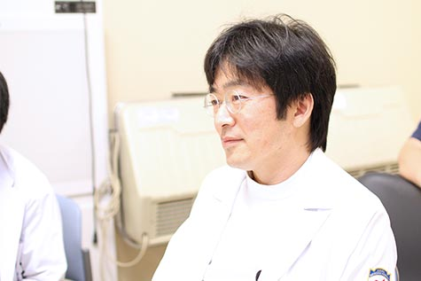

血液内科医
Hematologist【指導医】
 もどる
もどる米澤 昭仁
1教育体制
当院は日本血液学会認定血液研修施設であり、4名の血液専門医・指導医が研修医、修練医の指導をしております。当科では血液疾患全般的に診療しています。特に骨髄バンクや臍帯血バンク認定施設であり、同種造血幹細胞移植に関しても積極的に取り組んでいます。
2到達目標
初期研修で経験したことも生かして、後期研修医、修練医としてさらなる経験を蓄積し血液内科診療のスペシャリストとなることが目標です。
専門医に関しては、まずは研修中に血液専門医を取得することが目標です。当科は症例数も多く、あらゆる血液疾患を偏りなく経験できます。移植症例も豊富であり、造血細胞移植学会認定医も取得できます。他のがん診療に興味のある方は、他科と協力し薬物療法専門医資格を取得することも可能です。

3自身の修練医時代
学生時代に、血液内科は“内科の中の内科”、“究極の内科”という思いがあり、この道を選びました。卒業して20年程経ちますが、この選択を誤ったと感じたことは今まで一度もありません。
4メッセージ
一血液内科医だけでなく一社会人、一人間として成長できるよう指導にあたります。